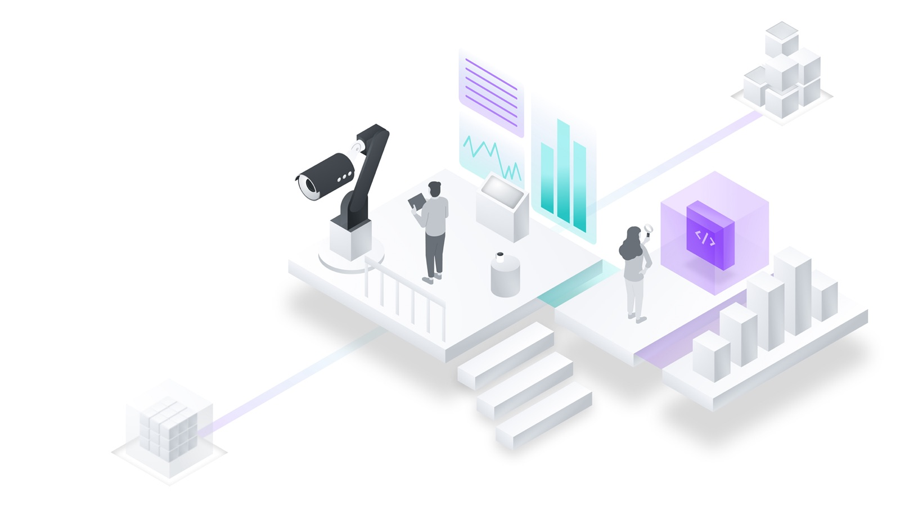
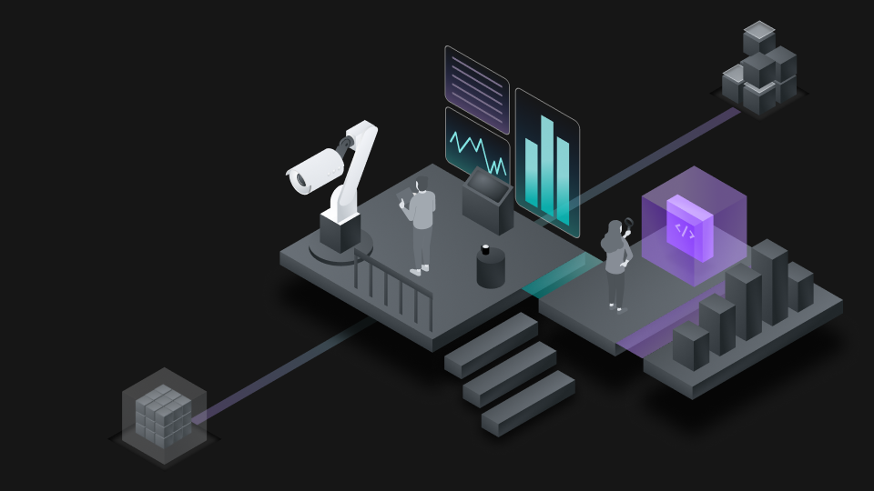

Product Design
IBM Cloud Observability
Four years on the Observability squad shipping enterprise products for operators running workloads at scale — from Activity Tracker routing to unified Observability, Monitoring, and Event Notifications.


IBM Cloud Activity Tracker
Role: Contributed to UX/UI improvements and routing flow redesign.
Key Work: Conceptualized low-fidelity explorations for improved routing interfaces.
Outcome: Initiated improvements for platform-level routing with early conceptual designs used in internal workshops.


IBM Observability
Role: Led visual and UI re-skin efforts using Carbon and Carbon for Cloud.
Key Work:
- Spearheaded preview, experimental, and beta UI design deliverables.
- Collaborated across internal and external teams to apply design system standards.
- Created final assets for live demonstrations at TechXchange.
Outcome: Delivered high-quality UI that aligned with IBM brand, enabling a smoother product rollout and handoff to development.


IBM Cloud Monitoring — Heuristic Evaluation
Role: Participated in heuristic evaluation and feedback loops for usability and design consistency.
Key Work:
- Evaluated and documented UX issues in Monitoring for D&UX reviews.
- Proposed visual and interaction updates for instance details and dashboard interfaces.
Outcome: Improved clarity and navigation in key workflows, contributing to broader observability quality-of-life enhancements.


IBM Cloud Event Notifications
A tedious 4-step process that required steps 1–3 just to begin the full flow has been reduced to a single flow. The conditions flow — which if you think about it looks a lot like an email rule builder — surfaced a recurring problem in my work: building rule builders flexible enough to fit into a variety of experiences. They can be tricky, but working on them taught me a lot about interaction design and the rule of pyramids.
Role: UX/UI designer and researcher for major flow updates.
Key Work:
- Led co-design workshops and facilitated user testing.
- Created a "fast track" creation flow with simplified navigation and streamlined interaction.
- Built a high-fidelity prototype and contributed to component creation in Carbon for Cloud.
Outcome: Created a more intuitive experience and reusable UI components, helping the product align better with platform standards and accessibility goals.


Technical Storytelling & Illustration
Alongside shipping product, I contributed to IBM Cloud's illustration system — building empty states, onboarding moments, and brand moments that gave the Observability products a consistent voice inside an otherwise dense enterprise console. That work fed into the broader Cloud Pal 2.0 system now used across IBM Cloud.